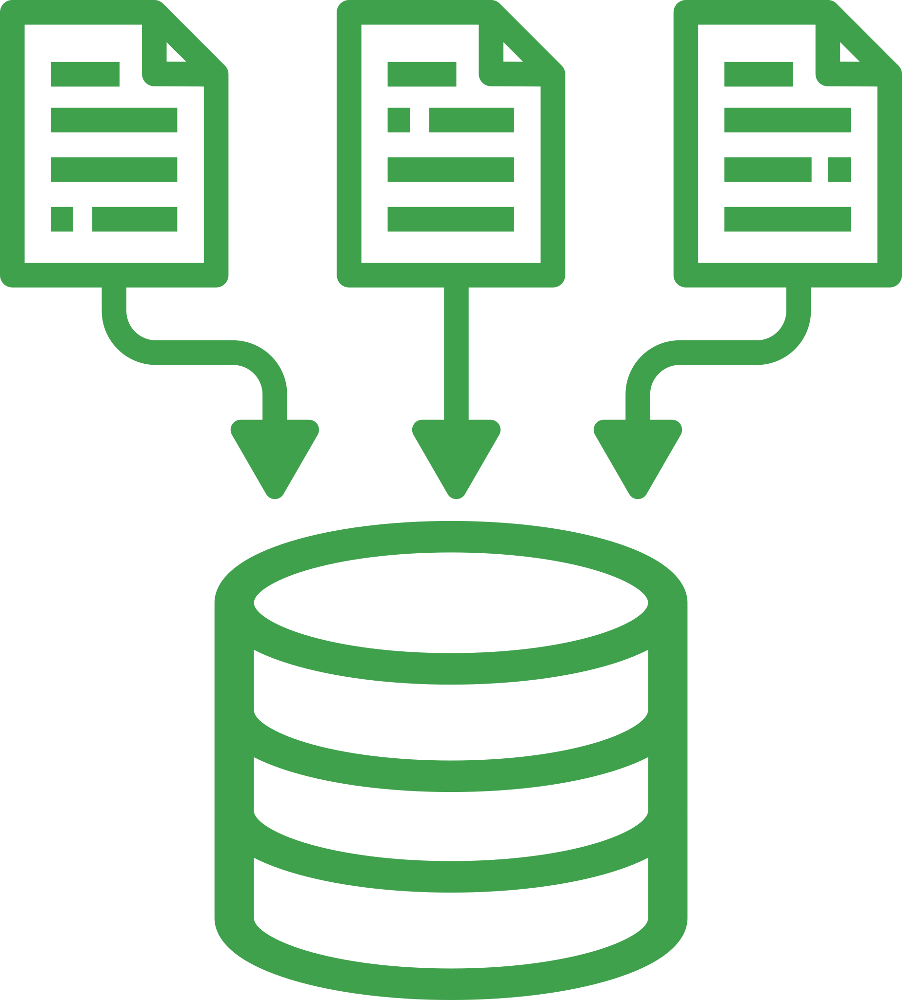

Amostra de 12 mil alertas classificados manualmente pela equipe de operação.
Fonte: auditoria interna, jan/2026
02
Método
Três etapas
01

Coletar
Séries brutas dos sensores, sem agregação prévia.
02
Modelar
Baseline sazonal por sensor, com janela móvel de 30 dias.
03
Validar
Revisão cega por três anotadores independentes.
Campo
Onde os dados nascem
Doze estações em operação contínua desde 2024, com amostragem a cada cinco minutos.
Comparação de abordagens
Critério
Limiar fixo
Sazonal
Autoencoder
Precisão
Baixa
Alta
Alta
Custo
Mínimo
Baixo
Alto
Explicabilidade
Alta
Alta
Baixa
Manutenção
Manual
Automática
Automática
Resultado
O baseline sazonal venceu
Com um terço do custo do autoencoder e a explicabilidade preservada, o modelo sazonal reduziu o volume de alertas em 78% sem perder nenhuma falha crítica conhecida.